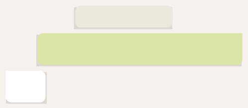

madre haya resuelto un poco el asunto del trabajo es algo bueno.
Y si está harta del fútbol pues deberá acostumbrarse, porque la cosa recién empieza.
¡Si supiera que él, Javier, es uno de los responsables de que aquel mundial haya ocurrido!

8:00, 25 de junio de 2030
JAVI
No voy a clase, estoy muerto, date una vuelta y te cuento
FEDE
Okidoki
¿De dónde habrá sacado ese okidoki?
Seguramente de algún tiktoker de principios de siglo.
Ahora seguro que es un viejo que no habla con nadie y se pasa las horas en el meta, con un avatar mal diseñado.
Uh, qué patético.
Al mediodía, llega Federica.
Los cachetes rojos del frío y el pelo revuelto, una sonrisa de oreja a oreja.
—Dale, Dr. Who, ahora contame todo.
Javier está en pijama, con los pelos parados y lagañas.
—¡Lamentable lo tuyo, Javi! ¿Te miraste al espejo? ¿Y ese pijama? Es la cosa más ridícula que vi en mi vida. ¿Ositos Gomi? ¡No das ni para vintage!
—Cuando dejes de tomarme el pelo, te cuento.
Tomate tu tiempo, es gratis.